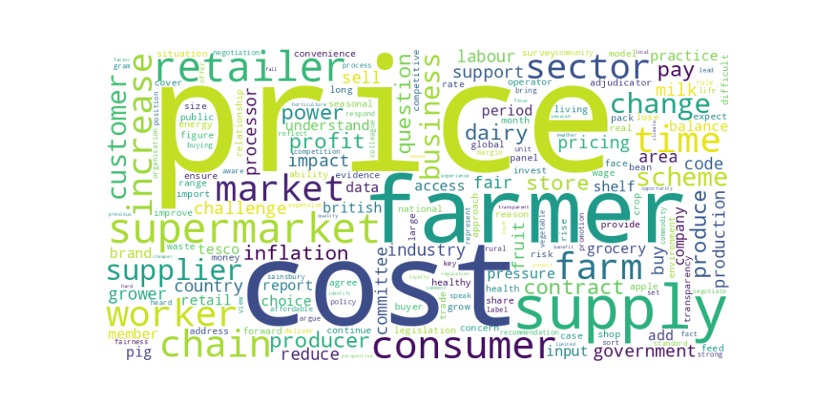

Think Better World - Preliminary Data Analysis Results
Word Clouds
Environment, Food, and Rural Affairs Committee

Food, Diet, and Obesity Committee
Topic Modelling Visualisations
Environment, Food, and Rural Affairs Committee
Food, Diet, and Obesity Committee
Bigram Networks
Important Food Topics